오른쪽(휴대폰에서는 위쪽)의 폴더를 눌러 기밀 파일을 열어 보세요.
왼쪽 아래 ‘시작’ 메뉴에서 한 번에 모두 열 수도 있어요.
cat readme.txt
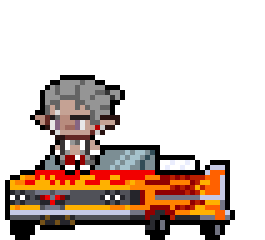
나무토막보다 더 목석같은 돌멩이 남자에게 첫눈에 반해 버리면 어떡하죠
드림 상대는 FF14 7.x 대형 서브 퀘스트에 등장하는 캐릭터 ‘더 타이런트’입니다.
작업하시다가 확실하지 않은 부분이 있으면 언제든 물어봐 주세요.
저는 Claude를 사용해서 번역하고 있어요. 혹시 어색한 표현이 있더라도 너그러이 이해해 주시면 감사하겠습니다 😊
커미션／선물 그림 업로드 위치
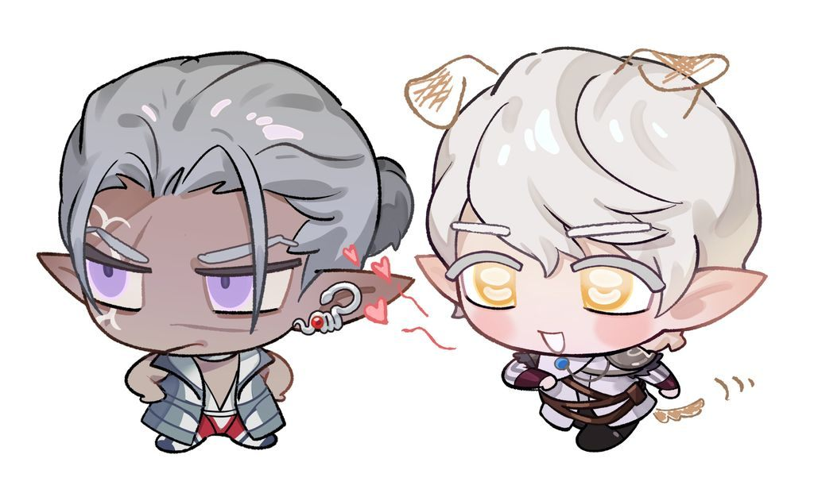
open arkose.pro
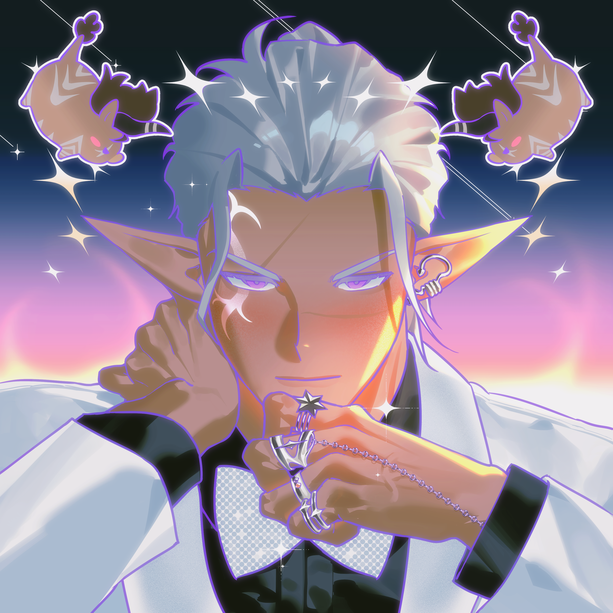
- 이름
- 알코스 Arkose
- 투사명
- 더 타이런트 The Tyrant
- 출생지
- 제9세계．외곽 마을
- 종족
- 엘레다이트 남성
- 나이
- 20세
- 직업
- 아르카디아 선수권 전 통합 챔피언
- 키
- 213 cm
- 동물 이미지
- 소, 돼지
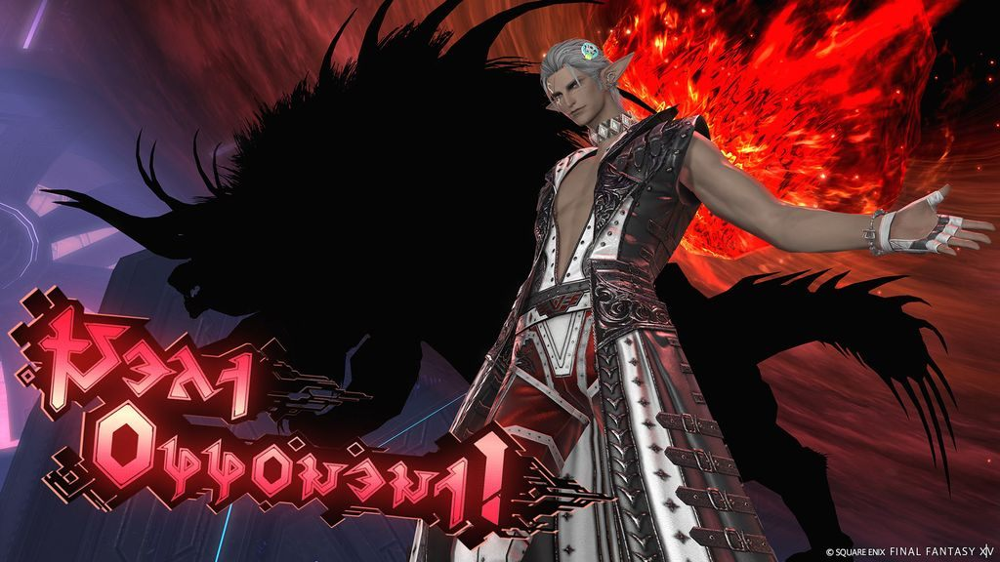
외모
회색 머리를 뒤로 넘겨 반묶음으로 묶었고, 앞머리 두 가닥이 내려와 있어요. 오른쪽 눈과 콧등에 흉터, 오른쪽 뺨에 흰 문신이 있고, 눈동자는 연보라색이에요.
보충: 머리 위의 레귤레이터는 변신하려 할 때 빨갛게 변해요(나중에 벗어 버렸기 때문에 안 그려도 괜찮아요). 몸에 흉터를 더 그려 주셔도 좋아요(좋아함
성격
# 진지함, 중2병, 전형적인 무뚝뚝 상남자, 단순함
한때는 오직 힘만을 좇았고, 자존심이 강하며 강자를 동경해요. 말투는 진지하고 표정도 늘 엄숙해서, 일을 위해서라면 연기도 진지하게, 중2병도 진지하게 하는 사람이에요. 많은 행동이 사실은 정말로 순수한 서툶에서 나오고, 하고 싶은 말은 그대로 입 밖에 내는 사람이에요.
연애・감정
제거인 시절에는 생각해 본 적도 없었어요. 오로지 강해지는 것만을 좇는 자신에게 애정도 우정도 필요 없고, 남의 시선도 의미가 없었죠. 자신이 어디까지 강해질 수 있는지에만 관심이 있었고, 그 때문에 밤낮으로 온갖 무기를 익히며 마물 영혼의 힘을 극한까지 끌어내려 했어요. 아르카디아의 주인에게 발탁되어 아르카디아에서 지내며 조금씩 변해 갔고, 강함 말고도 팬들의 시선을 신경 쓰고 아르카디아를 아끼게 되면서, ‘재미없는 남자’라 불리던 그에게도 서서히 감정이 생겨났어요.
그의 희망이 희미해져 가던 무렵, 에드가가 혜성처럼 나타났어요. 마물의 영혼을 쓰지 않는 이 사람은 순식간에 그의 왕좌 앞까지 올라왔고, 그는 졌어요. 하지만 그것이야말로 그가 오랫동안 바라 온 패배였어요.
에드가가 다시 그의 앞에 나타났을 때, 그는 상대가 일부러 이런 외곽까지 자신을 비웃으러 온 줄 알았어요. 그런데 에드가는 수련 상대가 되어 주고 싶다며 “강해지고 싶다면서 마물 사냥만으로 되겠어?” “차라리 나랑 대련하자!” 하고 말했죠. 해맑게 웃으며 당연하다는 듯이 말하는 에드가에게, 그는 어느새 이 영문 모를 남자가 곁에 있는 데 익숙해져 갔어요.
간단 설정
원래는 모든 무기를 능숙하게 다루는 ‘최강의 제거인’으로, 마물의 영혼을 주입하지 않아도 강해요. 경기에서는 여러 무기를 쓰고 기술도 변화무쌍해요. 통합 챔피언으로서 아르카디아가 보관한 영혼을 자유롭게 쓸 권리가 있어서, 매번 상황에 맞는 마물의 영혼을 골라 써요. 플레이어와의 대결에서는 베히모스의 영혼을 주입해 싸웠어요.
더 타이런트 상세 배경 스토리.txt
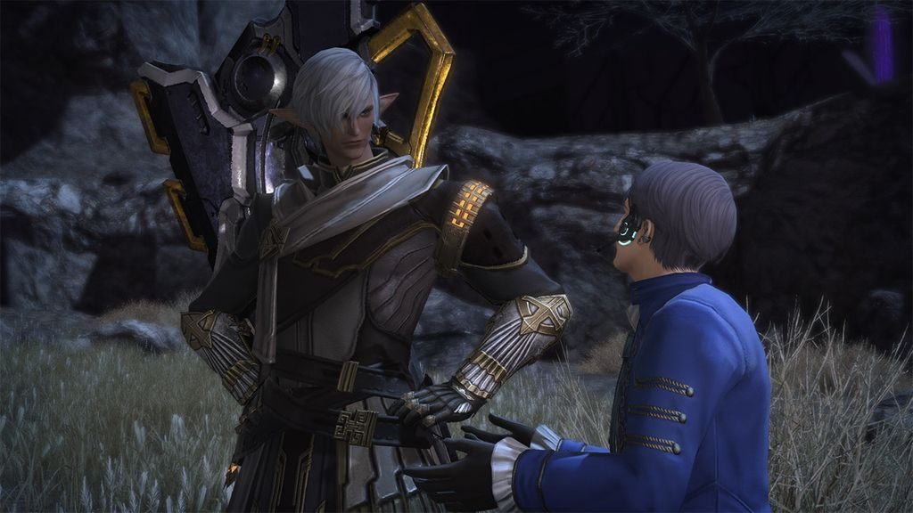
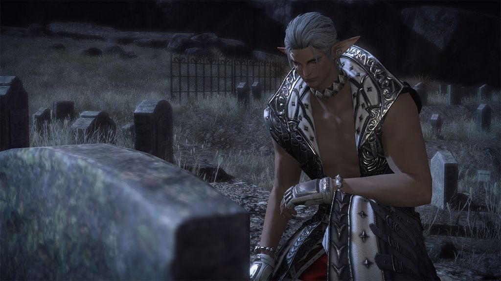
「폭군의 탄생」 — FINAL FANTASY XIV 한국 공식 사이트 단편 소설 (원문 ↗)
헤리티지 파운드의 ‘이름 새긴 묘지’에 한 남자가 우두커니 서 있었다. 그의 이름은 ‘알코스’―― 아르카디아의 통합 챔피언이자 더 타이런트로 알려진 남자다. 솔루션 나인의 시가지였다면 수많은 팬에게 둘러싸였을 것이다. 하지만 좀처럼 사람이 찾아오지 않는 이 묘지에서는 누구의 방해도 받지 않고 조용히 무덤을 마주할 수 있었다. 다만 무덤 아래에 유해는 잠들어 있지 않다. 영혼 침식증을 치료하기 위해 린드블룸의 영혼을 주입한 주인은 거대 뱀으로 변모한 끝에 토벌되었고 핵만 남긴 채 먼지가 되어 사라졌기 때문이다. 그럼에도 무덤이 세워진 건 생전에 레귤레이터를 착용하지 않는다는 원칙을 지켰던 주인 본인의 강한 뜻에 따른 것이었다. 알코스는 텅 빈 무덤을 향해 조용히 말을 걸었다.
“생각해 보면, 당신과 만난 것도 이렇게 쓸쓸한 곳이었지요.”
과거 알코스는 모든 무기를 자유자재로 다루는 제거인으로 유명했다. 독보적으로 뛰어난 실력 덕에 어느새 ‘최강의 제거인’이라고까지 불리게 되었다. 하지만 한편으로는 ‘재미없고 고지식한 사람’이라는 평도 따라다녔다. 비정상적으로 불어난 마물 무리를 퇴치하는 큰 임무를 마친 뒤에도 동료들이 수고했다며 술자리에 부르면 ‘새 무기를 익혀야 한다’는 말로 무뚝뚝하게 거절하곤 했다. 그런 일이 반복되는 사이에 어느새 아무도 그를 초대하지 않게 되었고, 돌아보니 친구라 부를 수 있는 사람도 남아 있지 않았다. 하지만 정작 그 자신은 한 번도 외롭다고 생각해 본 적이 없었다. 사람은 약하기에 무리를 짓는다. 오로지 강해지는 것만을 좇는 자신에게는 애정도 우정도 필요 없다. 남들 눈에 어떻게 비치든 상관없다. 알코스는 그렇게 굳게 믿고 있었다. 관심이 있는 것은 단 한 가지――자신이 어디까지 강해질 수 있는가, 그것뿐이었다. 그는 그 답을 찾기 위해 마물의 영혼이 가진 힘을 남김없이 끌어낼 수 있도록 밤낮으로 온갖 무기를 익히는 데 매진했다. 그러던 어느 날, 여느 때처럼 선더야드에서 새로 손에 넣은 큰낫을 다루는 수련에 열중하고 있을 때였다. 알코스 앞에 잘 차려입은 노인이 나타났다. 바로 아르카디아의 주인이었다.
“자네, 아르카디아의 투사가 되지 않겠나?”
오락에 문외한인 알코스도 세간의 화제인 격투 경기가 있다는 이야기는 들어본 적이 있었다. 하지만 그에게 싸움이란 자신의 실력을 갈고닦는 신성한 것이었기에, 구경거리로 삼는 것은 더없이 고약한 취미라고 생각했다.
“관심 없습니다.”
알코스는 바로 거절했다. 하지만 주인은 기분이 상한 기색도 없이 부드러운 어조로 말했다.
“그렇군…… 하지만 자네는 자신이 가진 힘을 충분히 발휘하고 있다고 할 수 있나?”
그 말은 알코스의 가슴 깊숙이 파고들었다. 수련을 거듭할수록 강해졌지만, 자신의 힘을 시험할 상대는 줄어들기만 했다. 한때 가슴을 뛰게 했던 격전도, 한계를 뛰어넘는 사투도 이제는 없다. 마물 퇴치는 어느새 도전이 아니라 정해진 일을 담담히 해치우는 일상으로 변해 있었다. 주인은 그의 갈증을 꿰뚫어 보고 있었던 것이다. 그럼에도 아르카디아의 투사가 되는 일에는 망설임이 있었다.
“구경거리가 되어 사람들에게 쫓겨 다니는 생활은 싫습니다.”
꾸밈없는 본심이었다. 그러자 주인은 잠시 생각한 뒤 이렇게 제안했다.
“그렇다면 복면 투사는 어떤가?
얼굴을 숨기면 자네 자신이 주목받는 일은 없을 걸세.”
알코스에게는 더할 나위 없는 조건이었다. 그렇게 얼마 뒤, 그는 주인에게 ‘마스크드 저스티스’라는 별명을 받아 정의감이 넘치는 정체불명의 착한 투사로 데뷔하게 되었다. 마물의 영혼을 주입한 상태에서도 맨얼굴이 드러나지 않는 특수한 복면을 착용한 덕분에 알코스는 아무 부담 없이 자신의 힘을 발휘할 수 있었다. 압도적인 실력으로 강적을 잇달아 쓰러뜨리며 연승 행진을 이어가는 마스크드 저스티스. 지금까지 마물을 상대로는 결코 느껴본 적 없는 짜릿함. 한 수마다 전황이 요동치는, 숨이 멎을 듯한 긴장감. 오랜만에 자신의 한계를 시험할 수 있는 곳을 얻은 알코스는 아르카디아에서의 전투 속에서 더할 나위 없는 기쁨을 찾게 되었다.
하지만 그 눈부신 전적과는 달리, 마스크드 저스티스의 인기는 생각만큼 오르지 않았다. 이유는 단순했다. 그는 너무 강했다. 그리고 너무나 서툴렀던 것이다. 고지식한 알코스는 관객을 열광시키는 연출에 약했고, 경기 전후의 대사도 무미건조했다. 게다가 주인이 준비한 ‘정의감 넘치는 정체불명의 착한 투사’라는 캐릭터도 제대로 연기하지 못했다. 관객을 열광시켜야 할 순간에도, 그는 담담하게 이길 뿐이었다. 관객이 감동적인 말을 기대해도, 그의 입에서 나오는 것은 경기 내용의 분석과 반성뿐이었다. 실력은 압도적이지만, 오직 승리만을 생각하는 듯한 모습에서는 어떤 희로애락도 느껴지지 않았다. 관객이 감정을 이입할 여지가 없었던 것이다.
애초에 그저 자신의 힘을 발휘할 수 있는 곳을 원했을 뿐, 구경거리가 될 생각 따위는 없었다. 그런데도 어느 순간부터 자신을 향한 환호성의 크기와 관객의 반응에 일희일비하는 자신이 있었다. 예전에는 대수롭지 않다며 무시했던 타인의 평가를, 어느새 신경 쓰게 된 것이다.
마침내 마스크드 저스티스는 통합 챔피언의 자리에까지 올랐다. 그럼에도 관객의 마음을 사로잡지는 못했다. 패배한 상대에게 응원이 쏟아지고 선전한 전 챔피언에게는 아낌없는 박수가 터져 나왔지만, 승자인 마스크드 저스티스에게는 간간이 들려오는 환호가 전부였다. 누구보다 강하고, 누구보다 노력해 왔다. 실제로 이긴 것도 나다. 그런데 어째서 사람들은 내가 아닌 패자를 칭송하는가. 강한 힘만이 전부라고 믿어 온 알코스에게 그것은 이해하기 힘든 좌절이었다. 실의에 빠져 대기실로 돌아온 그에게 엎친 데 덮친 격으로 또 한 방이 날아들었다. 모니터에 나오고 있던 방송 ‘아르카디아 나우’에서 관객들이 새 통합 챔피언이 된 마스크드 저스티스를 두고 ‘재미없고 고지식한 사람’이라며 비웃고 있었던 것이다. 맞는 말이다――잘하는 건 싸움뿐, 그 이상의 것은 해내지 못하는 서툰 남자. 이쯤에서 그만둘 때가 된 것 같다. 그는 어떤 결심을 품은 채 주인의 방으로 향했다.
“아르카디아의 투사를 그만두게 해 주십시오. 제게는 맞지 않습니다.”
그러자 주인은 잠시 생각한 뒤, 부드러운 목소리로 이렇게 대답했다.
“괜찮아. 내 눈은 틀리지 않아. 자네 안에는 뜨겁게 끓어오르는 무언가가 있어.
그게 있다면 언젠가 꼭 빛을 발할 날이 올 거야.”
그 말에 알코스는 대답할 수 없었다. 지금까지 자신의 힘을 칭찬한 사람은 있었다. 하지만 이 노인만은 달랐다. 강한 힘만이 아닌 다른 무언가를 알코스에게서 보고 있었다. 그 사실이 그의 가슴을 뜨겁게 했다. 그렇다면 조금만 더 믿어 보자. 이 노인의 눈을――그리고 자기 자신을. 알코스는 깊이 고개를 숙였다.
하지만 그 무렵 아르카디아에서 생각지도 못한 사태가 벌어졌다. 전 통합 챔피언과 숙련된 투사들이 알 수 없는 병에 걸려 잇달아 쓰러진 것이다. 그 병은 마물의 영혼을 반복적으로 사용하면 발병하는 ‘영혼 침식증’으로 밝혀졌다. 투사들이 쓰러지자 누구보다 크게 동요한 건 주인이었다.
“모든 것은 내 책임이다. 그 누구도 희생시키지 않고 반드시 모두를 구해내겠다.”
그렇게 선언한 주인은 투사들을 구할 방법을 찾기 위해 분주히 뛰어다녔다. 오리제닉스의 연구자에게 협력을 구해 망국의 거대 뱀 ‘린드블룸’의 경이로운 재생 능력에서 치료의 돌파구를 찾았다. 공교롭게도 주인은 그 망국의 귀족 가문 후손으로, 린드블룸의 알을 계승하고 있었다. 그 알에서 거대 뱀의 영혼을 추출해 사람에게 주입하면 재생 능력을 얻어 영혼 침식증에 걸린 영혼을 치료할 수 있을지도 모른다는 것이었다. 주인은 그 가능성에 걸었다. 그리고 몸소 앞장서서 린드블룸의 영혼을 자신의 몸에 받아들였다. 하지만 결과는 참담했다. 그는 분명 경이로운 재생 능력을 지닌 거대 뱀으로 변모했다. 그러나 정작 그 힘으로 다른 사람을 치유할 수는 없었다. 오히려 너무나 강대한 힘에 육체가 지배당해 인간의 모습으로 돌아갈 수조차 없게 되고 말았다. 급기야 그의 정신마저 린드블룸의 본능에 잠식되기 시작했다. 어쩔 수 없이 주인은 자신을 극장형 링 깊숙한 곳에 가두게 했다. 이윽고 그의 의식은 완전히 거대 뱀에게 집어삼켜진 듯했다. 모두가 주인은 이제 돌아오지 못할 거라며 절망하던, 바로 그때였다. 기계로 된 아르카디아 심판에게서 노인의 목소리가 울려 퍼졌다. 주인이 몸에 지니고 있던 통신 단말이 기적적으로 작동하고 있었던 것이다. 린드블룸의 육체에 갇혀 있으면서도 그는 간신히 의식을 유지하고 있었고, 심판을 원격으로 조작해 외부와 의사소통할 수 있었다. 그리고 주인은 알코스에게 최후의 수단을 전했다.
“나를 쓰러뜨려 주게. 린드블룸의 핵을 쓰는 거야.”
알코스의 은인이자, 한결같이 자신을 믿어 준 사람. 그런 사람의 목숨을 제 손으로 끝내라는 말이었다. 알코스는 당연하다는 듯 거절했다. 곧바로 협력하던 연구자에게 대체 치료법을 찾아 달라고 청했지만, 연구자는 야속하게도 고개를 저을 뿐이었다. 애당초 다른 방법이 없었기 때문에 주인은 위험한 도박에 나섰던 것이다. 알코스는 가슴이 찢어질 듯한 심정을 안고 망국의 거대 뱀에게 도전했다. 하지만 현실은 더욱 잔혹했다. 통합 챔피언인 그가 전력을 다해도 린드블룸을 쓰러뜨릴 수 없었던 것이다. 끊임없이 단련해 온 힘도, 갈고닦아 온 기술도, 압도적인 재생 능력을 자랑하는 거대 뱀 앞에서는 모두 의미를 잃어 갔다. 분명 상처를 입혔는데도 육체는 순식간에 재생되었고, 혼신의 일격조차 승리로 가는 길을 열어 주지 못했다. 지금까지 무패를 자랑하던 그가 처음으로 맛본 패배였다. 간신히 극장형 링에서 빠져나온 알코스에게 심판을 통해 주인이 말했다.
“아르카디아를 계속 운영해 린드블룸을 쓰러뜨릴 자를 만들어 내는 수밖에 없다.”
주인의 명에 따라 ‘영혼 침식증’의 존재는 비밀에 부쳐졌다. 병으로 쓰러진 투사들은 표면적으로는 은퇴한 것으로 꾸며 두고, 실제로는 저온 상태로 재워 병의 진행을 억제하기로 했다. 그리고 그날부터 아르카디아는 새로운 역할을 짊어지게 되었다. 관객을 열광시키는 격투 경기라는 겉모습 뒤에서 린드블룸을 무찌를 존재를 만들어 낸다는, 은밀한 목적을 품은 곳으로 탈바꿈한 것이다. 통합 챔피언인 마스크드 저스티스에게 주어진 사명은 도전자 앞을 가로막는 최후의 시련이 되는 것이었다.
그 뒤로 알코스는 악착같이 싸움을 이어갔다. 린드블룸의 무서움을 아는 그는 어중간한 실력으로는 결코 이길 수 없다는 것을 알고 있었다. 그렇기에 그리 쉽게 패배할 수는 없었다. 전력으로 맞서는 자신을 쓰러뜨릴 수 없는 자에게 망국의 거대 뱀 토벌을 맡길 수는 없다. 이제 관객의 평가 따위를 신경 쓸 상황이 아니었다. 그는 그저 묵묵히, 철저하게 도전자를 때려눕혔다. 마스크드 저스티스의 일방적인 경기에 당연하게도 관객의 불만은 커져 갔다. 그리고 어느 날, 결국 불만이 폭발하고 말았다. 알코스가 도전자를 쓰러뜨린 뒤, 객석에서 야유의 폭풍이 몰아친 것이다.
“지루한 경기는 집어치워!”
“분위기를 띄울 생각은 있는 거냐!”
“챔피언이라면 좀 살살 하라고!”
관객들은 영혼 침식증이나 주인에 대해서는 아무것도 모르니 어쩔 수 없는 일이다. 머리로는 그렇게 이해하고 있었지만, 끊임없이 쏟아지는 욕설 세례를 받자 알코스 안에서 뜨겁게 끓어오르던 무언가가 마침내 흘러넘쳤다. 그는 쓰고 있던 복면에 손을 올리더니 거칠게 벗겨 내 링 위로 던져 버렸다. 그리고 객석을 노려보며 뱃속 깊은 곳에서부터 성난 고함을 내지른다.
“아르카디아를, 우습게 보지 마라아아아!”
객석은 순식간에 쥐 죽은 듯 고요해져, 숨을 삼키는 소리마저 들렸다.
“격투는 구경거리가 아니다! 약한 상대에게 맞춰 싸우라니 가소롭기 짝이 없군!
나는 아르카디아 선수권의 정점을 차지한 통합 챔피언이다! 이것이 나의 아르카디아다……!”
착한 투사였던 마스크드 저스티스의 너무도 갑작스러운 돌변에 관객들이 술렁인다.
“저 녀석, 뭐지…….”
“전혀 착한 투사가 아니잖아.”
“마치…… 폭군 같아!”
폭군, 그 단어는 불씨처럼 객석으로 번져 나간다.
“타이런트!”
“타이런트!”
“타이런트!”
이윽고 무수한 함성이 단 하나의 이름을 외치기 시작했다. 알코스는 넋을 잃은 채 그 함성을 듣고 있었다. 강하기만 해서는 인정받지 못했고, 착한 투사를 연기해도 받아들여지지 않았다. 하지만 자신의 분노도 오만함도 숨기지 않고 드러낸 순간, 사람들은 그제야 그를 보았다. 강하기만 한 존재가 아닌, 내면에 끓어오르는 무언가를 품고 있는 한 사람의 투사로서. 그렇게 그날, 마스크드 저스티스는 사라졌다. 그 대신 통합 챔피언이자 아르카디아의 폭군 ‘더 타이런트’가 탄생했다. 주인을 위해, 영혼 침식증으로 쓰러진 투사들을 위해, 그리고 언젠가 린드블룸을 쓰러뜨릴 자를 만들어 내기 위해, 알코스는 스스로 악당 투사가 되는 길을 선택했다. 누구보다 강하고, 누구보다 미움받고, 그럼에도 누구보다 높은 벽으로서 정상에 계속 군림하는 것. 그것이 주어진 사명에 대한 알코스 나름의 답이었다. 얄궂게도 더 타이런트가 되면서, 그는 과거에는 원해도 얻을 수 없었던 엄청난 인기를 손에 넣었다. 착한 투사였을 때는 들을 수 없었던 커다란 환호성. 누구보다도 미움받을 법한 폭군이 누구보다도 사람들을 열광시키는 존재가 된 것이다. 게다가 투사들 또한 도발적인 더 타이런트를 무너뜨리겠다며 투지를 불태웠다. 그 얄미울 정도로 높은 벽을 뛰어넘기 위해 그들은 서로 경쟁하며 실력을 갈고닦아 전보다 더 강해져 갔다.
그럼에도 더 타이런트에게 패배를 안기는 자는 나타나지 않았다. 이윽고 알코스 자신에게도 영혼 침식증의 증세가 나타나기 시작했고, 남은 시간은 점점 줄어들고 있었다. 바로 그때, 마물의 영혼을 사용하지 않고 싸우는 ‘맨몸의 도전자’가 혜성처럼 나타났다. 그는 파죽지세로 연이어 승리를 거두며 통합 챔피언의 자리까지 다가왔다. 린드블룸을 쓰러뜨릴 수 있을지도 모르는 마지막 희망. 알코스는 맨몸의 도전자가 전력을 다하게끔 헤비급의 투사들과 함께 온갖 수단을 동원해 도발했다. 그리고 최후의 시련, 통합 챔피언 더 타이런트로서 혼신의 힘을 다해 그 가능성을 시험했다. 그 결과――마침내 그는 패배했다. 하지만 그 패배는 알코스가 줄곧 간절히 기다려 온 것이었다.
알코스는 묘비에 살며시 손을 얹었다.
“역시 당신의 눈은 틀리지 않았군요.”
과거의 자신은 강한 힘만 추구하는 ‘재미없고 고지식한 사람’이었다――하지만 지금은 다르다. 더 타이런트를 뛰어넘고자 하는 투사들이 있다. 아르카디아를 사랑하는 팬들이 있다. 그리고 맡겨진 미래가 있다. 알코스는 조용히 일어섰다. 맨몸의 통합 챔피언이 떠난 지금, 더 타이런트는 잠정 챔피언으로 군림하고 있다. 하지만 블랙 캣을 비롯한 신세대 투사들이 호시탐탐 아르카디아 선수권의 정점을 노리고 있다. 그렇다면 자신의 사명은 단 하나――바로 그들의 앞을 가로막는 것. 주인의 소원이 살아 있는 한, 아르카디아가 이어지는 한, 투사들이 뛰어넘어야 할 벽으로서, 그리고 언젠가 쓰러뜨려야 할 폭군으로서. 알코스는 무덤을 등진다. 그 발걸음에 더 이상 망설임은 없었다. 더 타이런트가 향하는 곳에는 열광의 링이 다시 기다리고 있다.
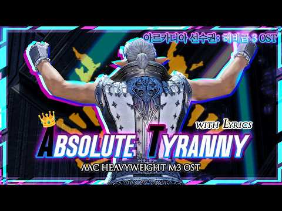
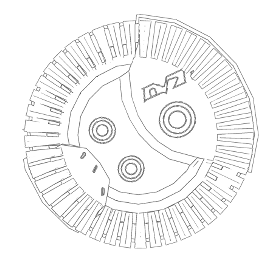
open edgar.pro
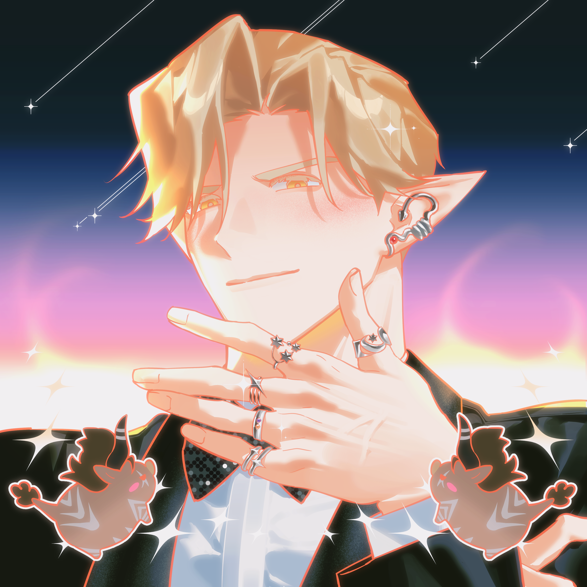
- 이름
- 에드가 포코니에 Edgar・Fauconnier
- 출생지
- 원초세계．이슈가르드
- 종족
- 엘레젠 남성
- 나이
- 30세
- 직업
- 빛의 전사(모험가)
- 키
- 207 cm
- 동물 이미지
- 코요테, 여우, 골든 리트리버
외형
옅은 금색의 살짝 곱슬거리는 머리에 주황빛 노란 눈. 눈을 드러내면 인상이 꽤 사나워 보여서 평소에는 앞머리를 내리고 다니고, 가끔만 머리를 정돈해요. 프로필 사진은 머리를 정돈한 모습이에요.
옷에 가려진 몸에는 흉터가 많아요. 왜 몸에만 흉터가 있냐고요? 얼굴 말고 다른 곳까지 치료하는 건 귀찮고, 에테르 낭비라고 생각하기 때문이에요.
성격
# 밝음, 친근함, 예측 불가, 얄미움
온화하고 다정하며 말이 많고 밝아요. 장난을 좋아하고 말투도 그다지 진지하지 않아요. 늘 미소를 띠고 있고 누구와도 금방 친해지는, 부탁하면 선뜻 도와주는 열정적인 모험가예요. 목숨을 걸고 적과 싸우는 일도 대수롭지 않게 여기며 가볍게 웃어넘기는, 생명이 스러지는 것을 당연하게 받아들이는 조금 이상한 남자예요.
연애・감정
진심을 잘 숨기는 사람이에요. 오랜 세월 너무 많은 전우와 친구를 떠나보냈기에 감정 앞에서는 도망치곤 해서, 나이를 먹도록 연애 한 번 해 본 적이 없어요. 그런데 정말로 좋아하게 되자, 다가가고 싶은 마음도 곁에 있고 싶은 마음도 참을 수 없게 됐어요.
알코스는 강해요. 안심이 될 만큼 강하죠. 그래서 아르카디아에서 그를 이긴 뒤로 줄곧 ‘수련’이라는 핑계로 그에게 다가갔어요. 알코스의 진지하고 순수한 모습이 좋고, 가끔 놀리면 겉으로는 침착한 척하면서 부끄러워하는 반응도 귀여워서, 그의 곁에 있으면 마음이 편해요. 상대가 영영 자신의 마음을 눈치채지 못할 수도 있다고 생각하면서도, 빛의 전사의 의무로 다음 세계로 떠나야 하기 전까지 하루라도 더 알코스 곁에 있고 싶어 해요.
간단 설정
젊은 시절 아버지의 뒤를 따라 기사가 되어 전선에서 용족과 싸웠어요. 성격이 비교적 온화해서 살육보다는 지키는 쪽을 택했고, 퇴역 후에는 사냥꾼이 되어 비교적 자유로운 삶을 살았어요. 전우들과 계속 연락하고 두루 인연을 맺었지만, 누구와도 그 이상 가까운 사이가 되지는 않았어요. 어쩌다 보니 ‘빛의 전사’라 불리게 되어 크고 작은 일을 겪으며 세계를 구한 뒤 진정한 자유를 얻었고, 솔루션 나인을 어슬렁거리다 아르카디아 선수권에 도전해 보라는 권유를 받고는 얼떨결에 승낙했어요. 모험하는 내내 누가 무엇을 도와 달라고 하든, 어디로 가 달라고 하든 다 들어줬으니까요.
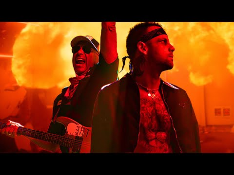
가사를 보면 빛의 전사의 본성이 전투광이라는 걸 알 수 있어요.
dir .\wardrobe
따로 외형을 지정하지 않았다면 여기 있는 옷을 골라 그려 주셔도 돼요!
옷에 따라 헤어스타일이 다를 수 있으니 참고해 주세요.
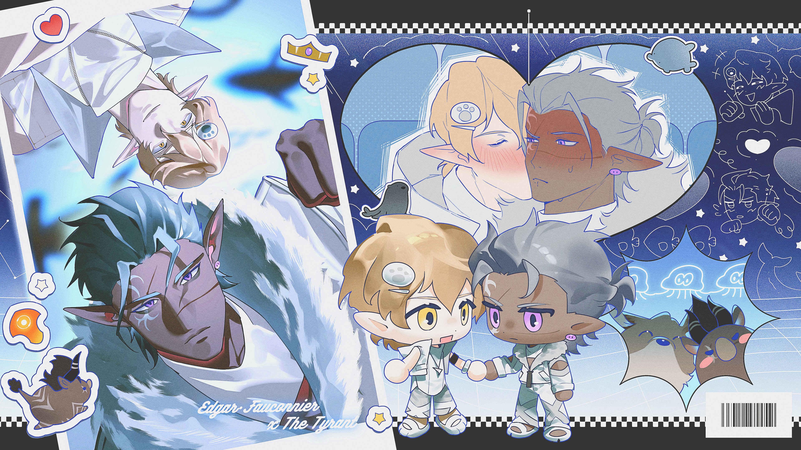
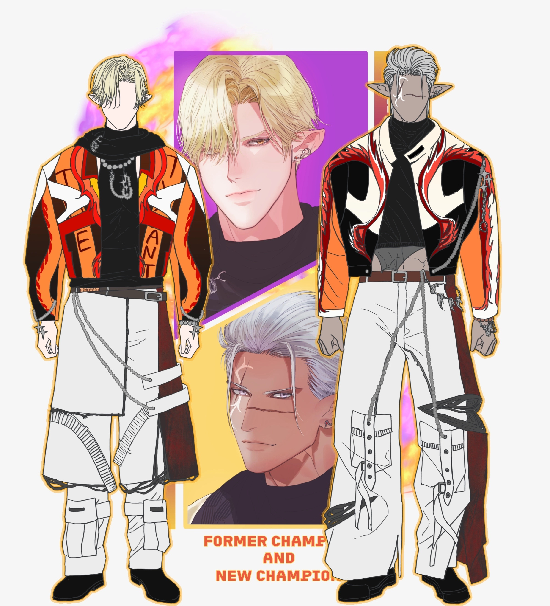
dir .\reference
체형 취향
더 타이런트(회색 머리) 3~4번 체형 모두 OK, 변신 후는 4번 선호
에드가(금발) 2~3번 체형 모두 OK
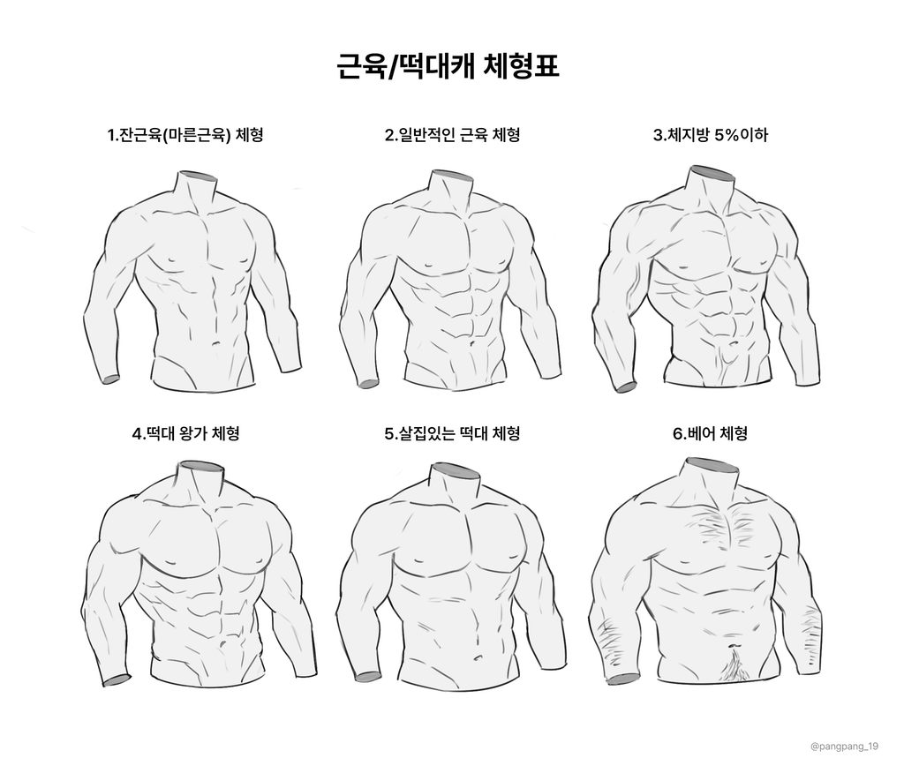
러프 스탠딩 일러스트
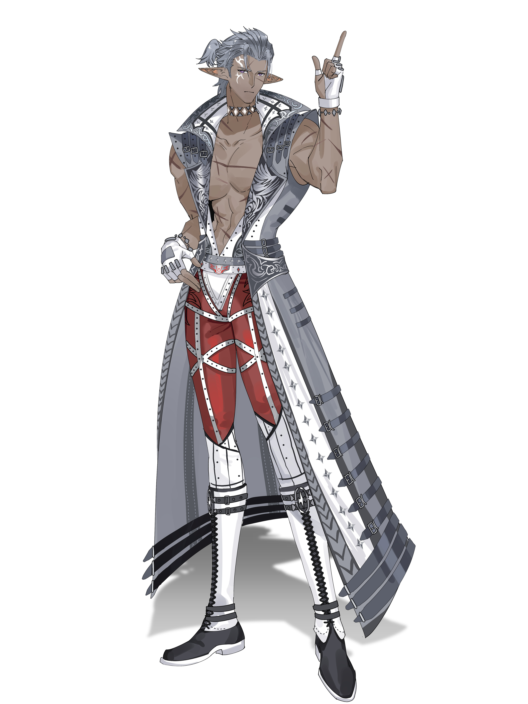
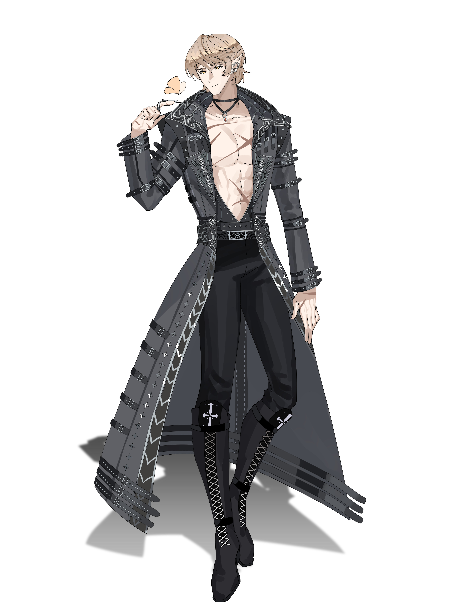
게임 내 참고
따로 의상을 지정하지 않았다면 아래 옷장 항목을 참고해 주세요.
＊색상표는 참고용이라 채색에 맞게 바꾸셔도 돼요.
＊특히 주의해 주세요
낙서 커미션이라면 간략화는 괜찮지만 마음대로 바꾸지는 말아 주세요. 예전에 의뢰한 일러스트에서 장신구가 전혀 상관없는 브러시 소재로 바뀐 적이 있어서 특별히 적어 둬요.
더 타이런트
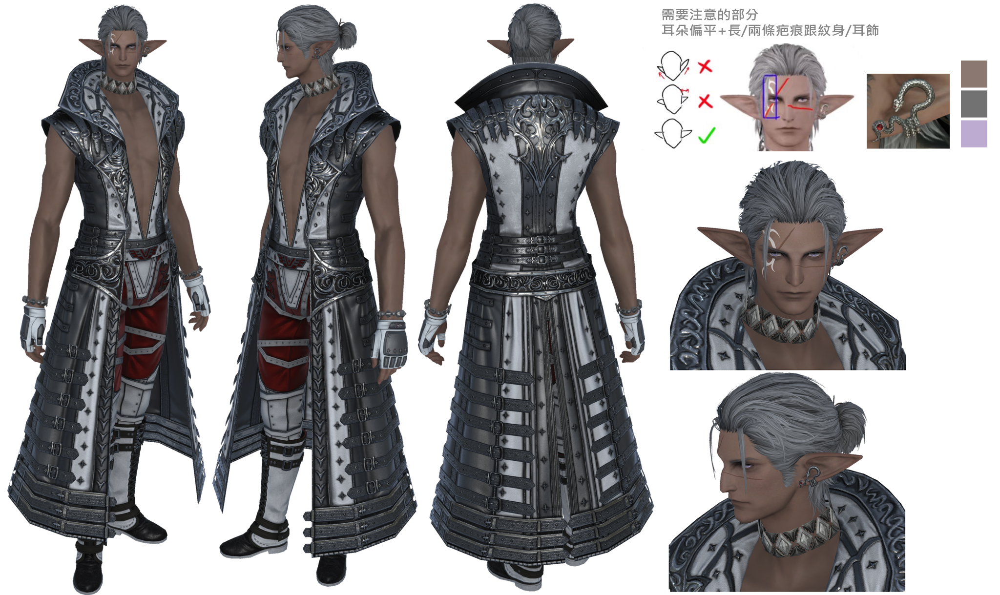
변신 관련
- 변신하면 체격이 원래의 약 세 배 정도로 커져요
- 송곳니를 좋아해서 송곳니를 그려 주셔도 돼요(좋음
- 특징 변화: 거대한 뿔(뿔 때문에 귀가 아래로 처짐), 검은 머리(뿌리 쪽은 살짝 회색), 검은 공막, 흰 눈동자(아주 살짝 연보라빛), 피부가 어두워지고 흰 무늬가 생김, 거대한 꼬리(문신과 이어지는 뿌리 쪽은 살짝 흼)
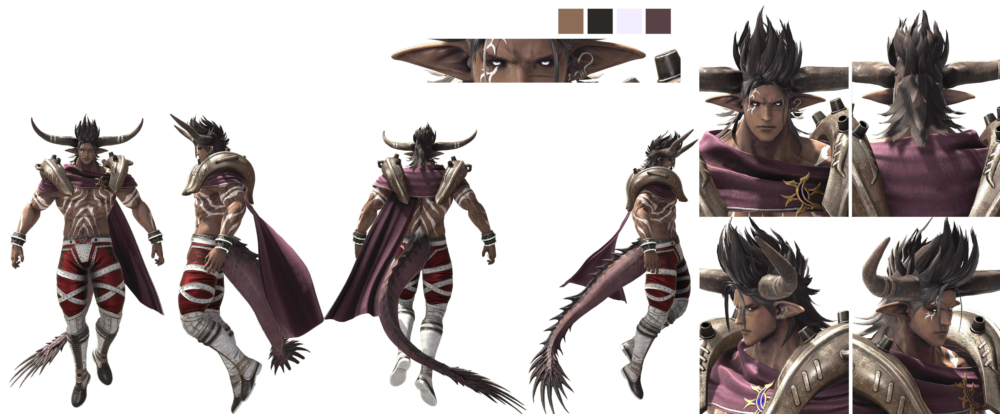
무기
변신하지 않을 때도 이 세 가지 무기를 써요. 일렉트로프로 언제든 무기를 만들어 낼 수 있어요: 큰도끼, 대검, 큰낫.
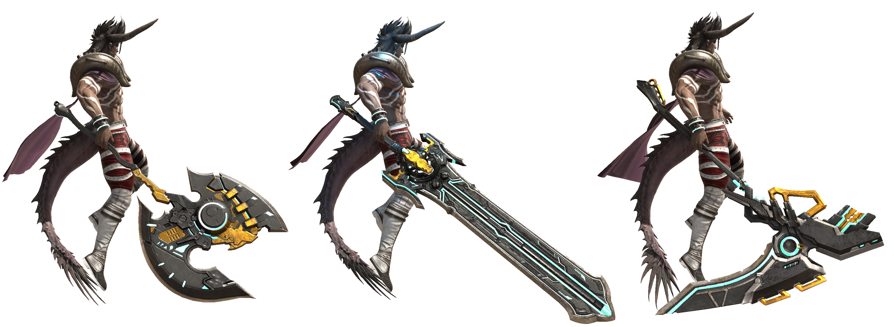
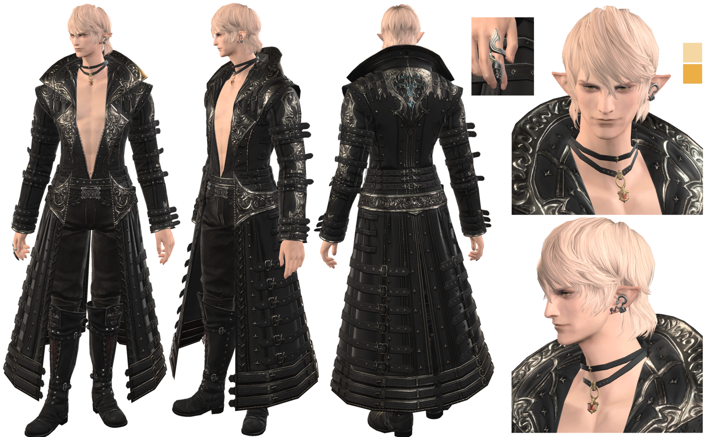
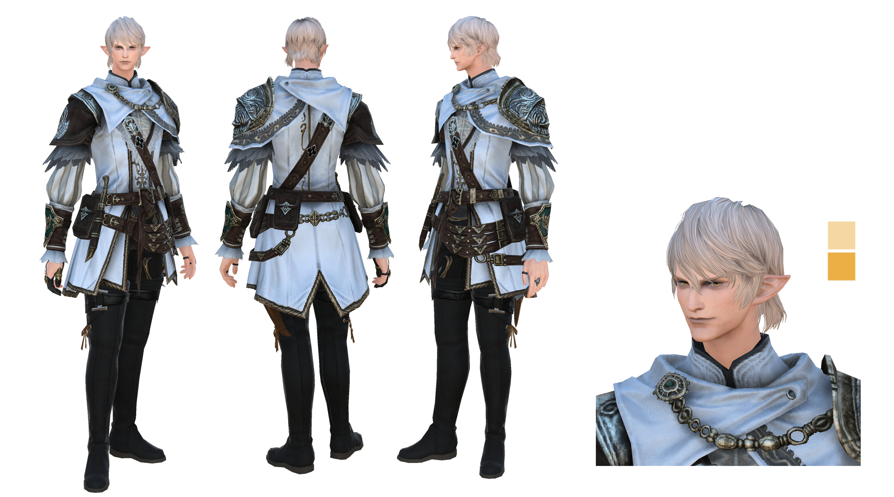
흰색인데 더러워지면 어떡하냐고? ——더러워지면 새 옷으로 갈아입으면 되지
open 두 사람의 관계
캐릭터 관계성
더 타이런트는 자존심이 강한 사람이라, 겉으로는 잘 드러나지 않아도 남의 시선을 신경 써요.
반면 에드가는 상당히 자유분방해서 남이 자신을 어떻게 보든 별로 신경 쓰지 않아요.
에드가는 연상이면서도 오히려 철이 없어 보이고, 더 타이런트는 지나치게 어른스럽지만 너무 목석같아요.
에드가는 늘 더 타이런트를 놀려요. 더 타이런트가 얼굴을 붉히며 어쩔 줄 모르거나 곤란해하는 모습을 보는 걸 좋아하죠.
물론 상대가 진지하게 물어 오면 오히려 본인이 쑥스러워져서 부끄러워해요.
더 타이런트도 가끔 진지하고 박력 있는 행동을 하거나 에드가의 수법을 배워 반격해서, 에드가의 얼굴을 새빨갛게 만들기도 해요.
관계성 참고
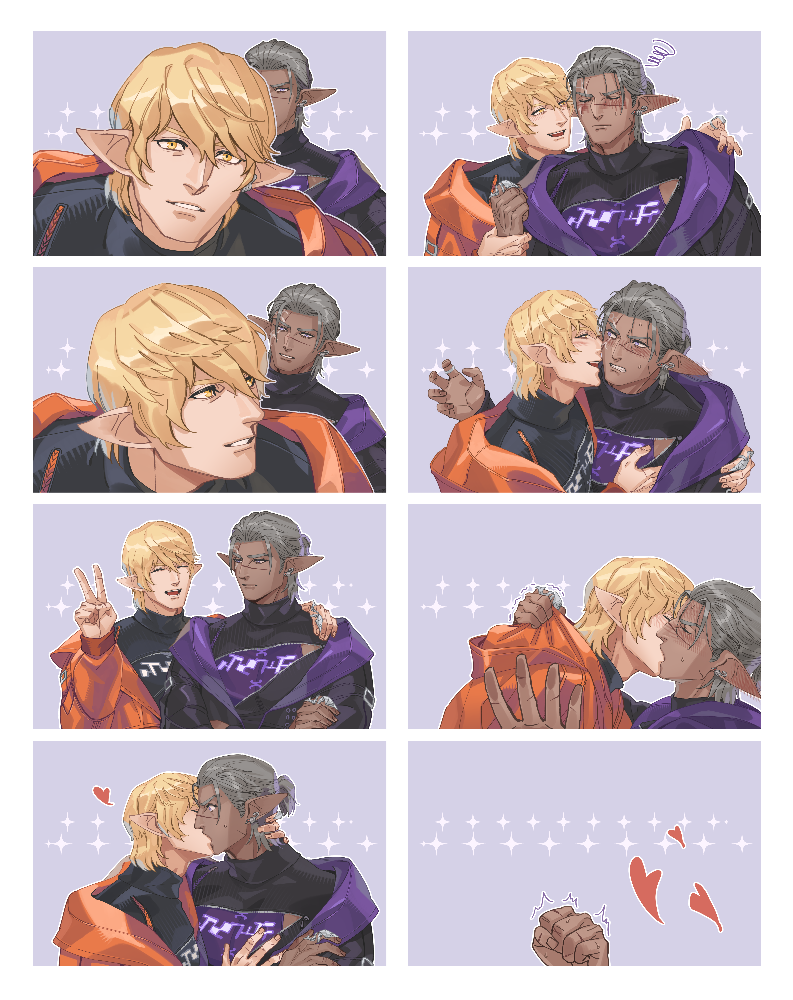
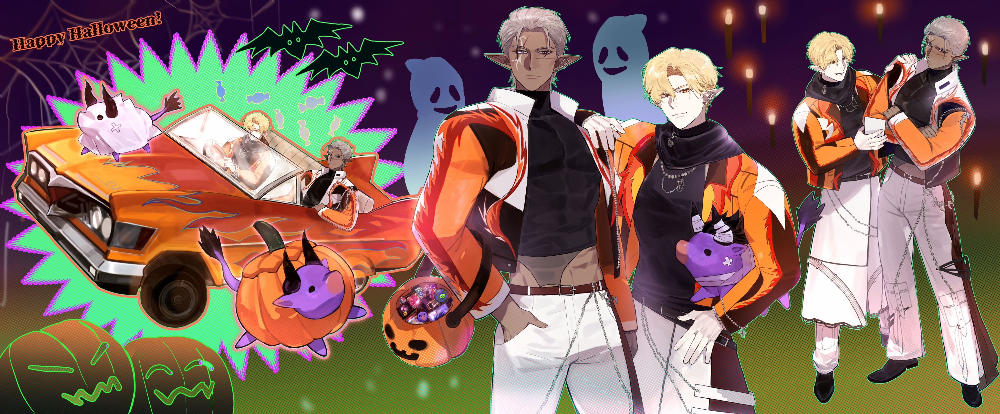
type story.txt
(글솜씨가 없어서 생각나는 대로 썼어요. 양해 부탁드려요)
시간대: 거대 뱀이 된 주인을 쓰러뜨리고 투사들의 영혼 침식증을 치료한 뒤, 아르카디아는 더 이상 마물의 영혼을 쓰지 않고 순수한 대전으로 바뀌어 가는 재정비 단계에 있어요. 주인이 없는 데다 체제까지 바뀌면서, 아르카디아에는 새로운 변화와 화제가 더 필요해졌어요.
‘아르카디아 나우’ 특별 방송에서 영혼 침식증의 진실과 주인의 최후, 그리고 전 통합 챔피언 타이런트의 본명이 공개되었다. 알코스.
마침내 용기를 내어 매일 수련을 핑계로 타이런트에게 다가가기 시작한 지 며칠 뒤, 술 한잔하러 들른 술집의 화면에서 그는 이 모든 사실을 알게 되었다.
주변 손님들이 타이런트의 귀걸이를 두고 수군대는 소문이 신경 쓰여 견딜 수가 없었다.
그 뱀 모양 귀걸이는 아무리 봐도 주인이 준 것이었다. “타이런트한테 여태 스캔들 하나 없던 게 혹시 주인이랑…” 하고 누군가 떠들었고, 그 뒤의 말은 에드가도 잘 기억나지 않았다. ‘어쩌면 그의 마음속엔 이미 누군가가 있을지도 몰라.’ ‘산 사람은 죽은 사람을 이길 수 없어.’ 그런 생각이 머릿속을 떠나지 않았다. 그래도 그는 웃는 얼굴을 유지했다. 가장 익숙한 표정이었다. 그날 밤, 그는 유난히 많이 마셨다.
온갖 고난과 위험에는 가볍게 대처해 왔고, 언제 죽음과 마주하더라도 담담히 받아들일 수 있었다. 그런데 정말로 누군가를 신경 쓰게 되자 평소처럼 실력을 발휘할 수가 없을 줄은 몰랐다. 게다가 이런 걸 본인에게 묻는 건 너무 실례였다. 그가 입을 열어 “주인은 너한테 어떤 사람이었어?” 하고 묻기만 하면, 숨김이라곤 조금도 없는 그 솔직한 남자는 반드시 대답할 테니까. 한 글자 한 글자 진지하게. 거기까지 생각한 에드가는 쓴웃음을 지었다. 마지막 잔을 비운 그는 테이블에 엎드려 혼잣말을 했다. “조금만 제멋대로 굴게 해 줘.”
그는 묻지 않을 것이다. 빛의 전사로서의 일을 하러 다시 떠나야 할 때까지, 여전히 매일 그 돌덩이 같은 남자를 귀찮게 할 것이다. 감정이란 충분히 멀리, 충분히 오래 떨어져 있으면 언젠가는 식기 마련이니까. 상대가 자신의 이상함을 분명 알아챌 거라는 것도 알고 있었다. 그 남자의 관찰력과 분석력은 무서울 정도였으니까. 아무리 감정을 숨기는 데 능숙해도, 귀걸이를 볼 때마다 스치는 짧은 망설임까지 감추기는 어려웠다.
그는 걸고 있었다. 상대가 존중하는 마음에서 사생활을 캐묻지 않으리라는 데. 그러면 떠나야 하는 그날까지 마음을 숨길 수 있을 테니까.
동시에 걸고 있었다. 어쩌면 아주 조금은 가능성이 있을지도, 그 희박한 기회로 상대의 마음에 무언가를 남길 수 있을지도 모른다는 데.
타이런트는 실제로 그의 이상함을 알아챘고, 하나하나 분석했다. 1. 보여서는 안 될 빈틈을 보이는 횟수가 크게 늘었다. 2. 상대의 미소가 어딘가 부자연스러워졌다. 무언가를 감추는 것처럼. 3. 손을 내밀어 붙잡아 줄 때의 힘이 전보다 훨씬 약해졌고, 곧바로 한 걸음 물러난다. 거리를 두려는 것처럼. 타이런트는 이 세 가지를 머릿속에 나란히 놓고 며칠이나 생각했지만, 결론을 내리지 못했다.
새벽의 혈맹 동료에게서 연락을 받고, 정말로 빛의 전사의 의무를 위해 제9세계를 떠나야 하게 되었을 때, 에드가는 메템 말고는 아무에게도 떠난다는 말을 하지 않았다. 그는 그저 익숙한 일들을 시작했을 뿐이다. ‘내일 봐’를 ‘나중에 얘기하자’로 바꾸고, 여관 숙소로 돌아가 얼마 안 되는 짐을 재빨리 정리해 언제든 떠날 수 있게 해 두는 것.
에드가가 아르카디아에 챔피언 자리를 잠시 비우는 절차를 밟으러 갔을 때, 처음에는 모든 게 순조로웠다.
메템은 그를 붙잡고 싶어 했지만 에드가의 선택을 존중했다. 그런데 메템이 “타이런트한테는 말했어요?” 하고 묻자, 서류를 쓰던 에드가의 손이 멈추고 겸연쩍은 표정이 떠올랐다. “미안, 난 그 사람이랑 대화하는 게 서툴러서.” 머릿속이 엉망이 된 에드가는 어설픈 거짓말을 짜냈다.
등 뒤에서 묵직한 발소리가 들려왔고, 에드가의 심장은 더욱 요동쳤다. 위압감이 서린 그 발소리만으로도 돌아보지 않아도 누구인지 알 수 있었다.
곧 잠정 챔피언이 될 남자가 바로 뒤에 서 있었다. 메템과 조용히 절차만 마치면 될 줄 알았지, 타이런트와 마주해야 할 줄은 몰랐다.
“떠나는군.” 낮고 차분한 목소리가 담담하게 말했다.
에드가 앞의 메템은 ‘나는 여기 있으면 안 되겠다’는 얼굴을 하더니, 에드가가 작성한 서류를 슬쩍 챙겨 이 숨 막히는 공간에서 도망쳤다.
돌아선 에드가의 미소는 완벽했다. “응, 원초세계 쪽에 일이 좀 생겨서. 오랜 친구들이 도와 달래.” 내일 날씨 이야기라도 하는 듯 가벼운 말투였다.
“내일 찾아가서 말하려고 했어. 네가 내 자리를 대신 맡아야 하잖아.” 또 거짓말이었다. 사실은 절차만 끝내고 그대로 떠날 생각이었다. ‘미안, 급한 일이 생겨서 챔피언 자리는 돌려줄게’라는 사과 편지 한 통만 남기고. 타이런트는 그 미소를 한참 동안 바라보았다. 에드가의 얼굴이 웃다 굳어 버릴 만큼 오래. “내가 널 불쾌하게 했나?” 직설적이었지만, 에드가가 생각한 것과는 전혀 다른 방향이었다. 말주변 없는 그 서투름에 에드가는 진심으로 웃음이 터졌다. “아니야.” “그냥 일 보러 가는 거야.” 표정은 한결 풀렸지만, 에드가의 시선은 옆으로 흘러 상대를 똑바로 보지 못했다.
“그럼 나를 보고 말해라.” 타이런트는 에드가의 어깨를 꽉 붙잡았다. 그의 표정은 여전히 진지하고 엄숙했다.
에드가는 한숨을 쉬었다. 역시 이 남자 앞에서는 당해 낼 재간이 없다. 그는 마음을 굳혔다. 상대가 자신을 친구로만 여긴다 해도 괜찮다. 더는 도망치지 않기로 했다.
그는 그동안의 이상한 행동을 설명했고, 들은 이야기와 해서는 안 될 생각까지 모두 털어놓았다. 타이런트는 그저 조용히 끝까지 들었다.
“귀걸이는 주인에게 받은 게 맞다.” 타이런트는 왼쪽 귀의 귀걸이를 매만졌다. 주인에게 처음 발탁되던 날부터, 마지막에 그 은인을 제 손으로 끝내야 했던 일까지 떠올리는 듯했다. “린드블룸의 영혼을 쓰기 전에 내게 맡긴 것이다.” “그는 아르카디아를 내게 부탁했고, 나는 받아들였다.” 잠시 침묵이 흐른 뒤 그가 덧붙였다. “그뿐이다.”
담담하게 말하고 있었지만, 에드가는 이 남자가 어떤 무게를 짊어져 왔는지 알고 있었다. 주인이 린드블룸과 융합한 뒤 벌어진 일들, 언제 목숨을 앗아 갈지 모르는 영혼 침식증. 당시 그 사실을 아는 건 헤비급 투사들과 메템뿐이었다. 그런데 자신이 그 기억을 떠올리게 만든 것이다.
“수련 때의 반응은 나를 싫어해서가 아니었군. 알겠다.” 에드가가 아직 죄책감에 빠져 있을 때, 타이런트가 다시 입을 열었다.
“그게 다야? 내가 이상하다고 생각 안 해?” 지금 자기가 어떤 표정을 짓고 있는지 에드가는 알 수 없었다. 분명 엉망이겠지.
“너는 원래 이상하다.” 입꼬리가 살짝 올라갔다. 그가 웃었다.
“갑자기 나타나서 모든 걸 해결했다.” “익숙해졌더니 또 갑자기 떠나려 한다.” “왜지?” 타이런트는 진지하게 의문을 드러냈다. 대전할 때도, 지금도, 그는 이 남자의 수를 끝내 읽을 수가 없었다.
에드가는 평소 타이런트에게 늘 빙빙 돌려 말하고 농담을 즐겼다. 알아듣지 못하면서도 진지하게 이해하려 애쓰는 그 표정을 보는 게 좋았다. 이번에도 타이런트가 못 알아들을 말로 얼버무릴 수 있었지만, 이제 와서 그럴 수는 없었다.
“알코스.” 갑자기 자신의 본명이 불리자 타이런트의 눈빛이 흔들렸다. “좋아해. 누군가를 이렇게 좋아해 본 건 처음이야.” 에드가는 타이런트를 똑바로 바라보았다. 눈물이 제멋대로 흘러내렸다.
“좋아한다면서, 왜 도망치려는 거지?” 그의 거친 손이 서툴게 에드가의 눈물을 닦아 냈다.
“무서웠으니까. 네 마음속에 이미 누군가 있을까 봐.” “네가 내 마음을 받아 준다 해도, 나는 언젠가 네 곁을 떠나야 해. 계속 여기 있을 수는 없어.”
에드가가 아직 그 혼란스러운 감정 속에 있던 그때, 다음 순간⋯ 그의 콧등에 무언가가 부딪쳤다.
타이런트가 요격이라도 하듯한 속도로 입을 맞춰 온 것이다. 입술은 곧고 딱딱하게 눌려 왔고, 앞으로 힘껏 밀어붙이는 힘이 실려 있었다. 마치 누구 머리가 더 단단한지 확인하려는 것처럼.
“읍!!⋯ 알코스!” 에드가는 코를 감싸 쥐고 물러났다. 부딪친 충격에 눈물이 또 찔끔 났다. “방금 그거, 박치기야?”
타이런트는 잠시 말이 없었다. 연보라색 눈에 보기 드문 당황이 떠올랐다가, 이내 억지로 가라앉았다.
“키스다.” “뭐가 잘못됐나.” 에드가는 어이가 없었다. 조금 전까지의 무겁고 괴로운 감정이 순식간에 사라지고, 그는 크게 웃음을 터뜨렸다.
“너 말이야… 정말 귀엽다.” “그럼, 내 마음을 받아 준 걸로 알게?” 그는 한 걸음 다가가 두 손으로 타이런트의 뺨을 감쌌다.
“타이런트와 귀여움은 아무 관련이 없다.” 타이런트가 엄숙한 얼굴로 반박했지만, 에드가는 손바닥에 닿은 뺨이 눈에 띄게 뜨거워지는 걸 느꼈다. “그래그래, 타이런트는 안 귀여워.” 타이런트는 고개를 끄덕여 동의를 표했다.
“넌 말이야, 온갖 무기를 잘 다루잖아.” “그런데 키스는⋯” 에드가가 입을 맞췄다. 돌끼리 부딪치는 것 같던 타이런트의 키스와는 달리, 가볍고 부드럽게.
“연습이 더 필요하겠네.” 에드가는 장난에 성공한 아이처럼 웃었다. 타이런트가 이렇게까지 당황한 표정을 짓는 건 처음 봤다. 그 길쭉한 귀 끝과 뺨이 새빨갛게 물들어 있었다.
“챔피언, 두 분 화해는 하셨어요?” 문밖에서 메템의 목소리가 들려왔다. 에드가 앞의 타이런트는 이미 활활 타오르는 돌이 되어 있었다.
“대충은 풀었어. 그래도 자세한 건 며칠 더 이야기를 나누는 게 좋겠어.” 에드가는 아무 일도 없었다는 듯 가볍게 말하며 문을 열러 갔다.
메템은 기겁했다. 그의 눈에는 타이런트가 화가 머리끝까지 나서 얼굴이 시뻘게진 채 한마디도 안 하는 것으로 보였으니까. “…챔피언, 대, 대체 타이런트한테 무슨 말을 했길래 저렇게 화가 나신 거예요.” “음~ 챔피언 자리를 무책임하게 떠넘기고 도망치려 한 건 인정할게.” 대체로 사실이긴 했다. “챔피언, 타이런트를 이길 수 있다고 그렇게 도발하시면 안 된다고요!!”
에드가는 더 신나게 웃었다. 한 사람은 그에게 놀림당해 머리가 멈춰 버렸고, 한 사람은 거의 무너지기 직전이었다.
“에드가.” 타이런트는 어느새 평소의 엄숙한 모습으로 돌아와 있었다.
“웬일로 내 이름을 다 불러 주네, 타이란트.” 에드가는 타이런트를 부르는 애칭을 썼다. (예를 들면, 다른 언어권 사람인 에드가가 ‘더 타이런트(The Tyrant)’를 억양 섞인 영어로 발음하는 느낌.)
“또 그 이상한 호칭이군.” 처음 그렇게 불렸을 때 타이런트는 도발당한 줄 알았다. 누군가 갑자기 이상한 억양으로 이름을 부르면 아무리 생각해도 도발 같으니까. 하지만 그 사람은 진지한 얼굴로, 매번 그 이상한 호칭으로 불렀다. 시간이 지나자 익숙해졌다. 이 세상에서 그렇게 부르는 사람은 그 사람뿐이라는 사실에.
“왕좌를 잠시 맡아 두는 역할은 받아들이겠다.” 옆에 있던 메템이 크게 안도의 한숨을 쉬었다.
“그때가 되면, 너는 반드시 네 손으로 왕좌를 되찾아야 한다.” “나는 전력을 다할 것이다.” 에드가는 그를 바라보며 ‘정말 못 말린다니까…’ 하는 얼굴을 했다.
“그럴게. 반드시 다시 네 손에서 빼앗아 갈게.” “왕좌만이 아니라, 네 마음까지.”
“약속이다.” 두 사람은 옆에서 지켜보는 메템은 아랑곳하지 않고 서로의 손을 꽉 맞잡았다.
“영감이 마구 샘솟아요!!!! 진정한 왕의 귀환, 모두 앞에서 자신의 마음을 충격적으로 선언하다! 이건 무조건 대박이에요, 아르카디아를 단숨에 정상으로 끌어올릴 거라고요! 당장 홍보랑 대사부터 준비할게요!” 메템이 기뻐서 모자까지 삐뚤어지자, 두 챔피언이 입을 모아 말렸다. “안 돼.”
“정말 안 돼요?? 아르카디아를 위해서라면 괜찮잖아요?” 에드가는 메템의 모자를 바로 씌워 주며 웃었다. “내가 돌아오면 그때 얘기하자. 꼭 돌아올 테니까.”
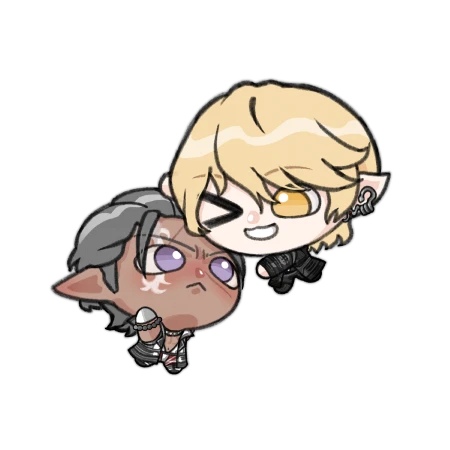
man world
가치관 차이
두 사람은 서로 다른 세계에서 태어나 가치관 차이가 많아요. 주로 제9세계 쪽을 보충해 둘게요.
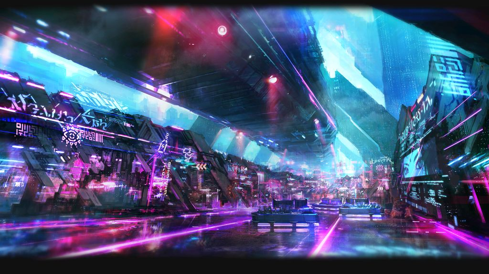
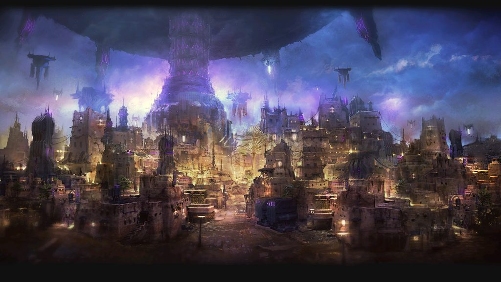
1. 날씨와 생활 방식
더 타이런트가 사는 제9세계는 돔으로 덮여 있어서, 주거 구역은 번개 속성으로 만든 첨단 기술 제품과 인공조명으로 가득해요. 주거 구역 밖은 늘 번개가 내리치는 먹구름에 덮여 있고, 도시에서 서핑하는 파도도 인공이며, 음식도 맛없어 보이는 영양 보충식뿐이에요. 솔루션 나인에서 태어난 사람들은 진짜 태양도, 사계절도 본 적이 없어요.
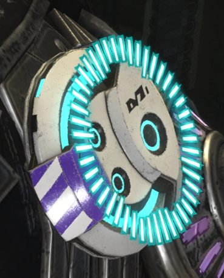
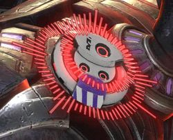
2. 죽음과 기억
제9세계 사람들은 사고를 당하면(예: 마물에게 살해당하면) 머리의 레귤레이터로 영혼 자원을 불러와 되살아날 수 있어요. 노화로 자연사할 때는 레귤레이터가 착용자의 기억에 간섭해 고인과 관련된 기억을 지우고 클라우드에 업로드해서, 죽음으로 인한 슬픔을 피할 수 있게 해요. 그래서 묘지는 오랫동안 아무도 쓰지 않았어요. 주인의 무덤은 어쩌면 그 자신의 소원이었을지도, 혹은 더 타이런트와 아르카디아 사람들이 그를 기억하고 싶어서 내린 결정이었을지도 몰라요.
거대 뱀이 된 아르카디아의 주인을 처치해야 했을 때, 더 타이런트는 스스로 “승자의 손을 더럽히게 하지 않겠다”며 직접 주인을 쓰러뜨렸어요. 그것이 그가 처음으로 사람을 죽인 순간이었어요. 온갖 일을 겪으며 수많은 적을 쓰러뜨려 온 빛의 전사는, 그런 우직한 성격이 순수하다고, 순수해서 귀엽고 또 안쓰럽다고 느꼈어요.
3. 일렉트로프
일렉트로프 기술은 알렉산드리아가 자랑하는 기술이에요. 생활에 필요한 각종 설비부터 바닥, 벽, 도시의 건물, 심지어 에버킵 전체까지 일렉트로프로 만들어졌어요. 번개의 힘을 품은 일렉트로프에 대응하는 마법 회로를 새기면, 번개의 힘을 불, 물, 바람, 얼음, 흙 등 어떤 속성의 힘으로도 바꿀 수 있어요.
4. 에테르
모든 생명을 이루는 가장 기본적인 요소이자, 온갖 마법 체계의 바탕이 되는 생명 에너지예요.
사람, 동물, 식물 등 이 세상의 모든 생명체 안에는 ‘에테르’라는 생명 에너지가 있어요. 다시 말해, 육체에서 에테르가 모두 빠져나가면 생명은 사라지고 죽음의 심연으로 떨어져요. 그런 의미에서 ‘에테르’와 ‘생명’은 같은 말이라고 할 수 있어요. 예를 들어 건강한 개체는 보통 비교적 많은 에테르를 지니고 있지만, 굶주리거나 병에 걸리면 몸속 에테르 총량도 줄어들어요. 일부 에테르 학자의 학설에 따르면, 생물이 음식을 먹는 본질은 각종 영양과 에테르를 섭취하는 것이라고 해요.
EOF · Notion에서 정리한 자료 · 마지막 동기화 2026-10-24